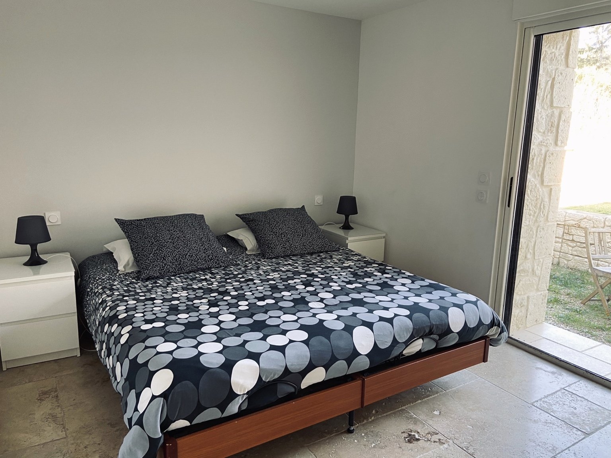

Domaine L’Escapade · Saint-Chamas
Nos cinq chambres
Cinq chambres meublées avec salle de bain et WC privatifs. Une cuisine commune équipée et une buanderie complètent les espaces à disposition.

Chambre 01 · Rez-de-chaussée
Les Alpilles
Lit 180 × 200 cm · Climatisation · Salle de bain et WC privatifs · Petite terrasse · Wi-Fi
Découvrir la chambre02 / Rez-de-chaussée
La Camargue
Accès à une terrasse extérieure.
Photos à venir03 / Premier étage
La Côte Bleue
Chambre avec balcon.
Photos à venir04 / Premier étage
Les Calanques
Chambre sans extérieur privatif.
Photos à venir05 / Premier étage
La Sainte-Victoire
Chambre avec mezzanine.
Photos à venirVotre prochain séjour
Une question sur les chambres ?
Contactez-nous pour connaître les disponibilités et les conditions adaptées à votre durée de séjour.
Nous contacter